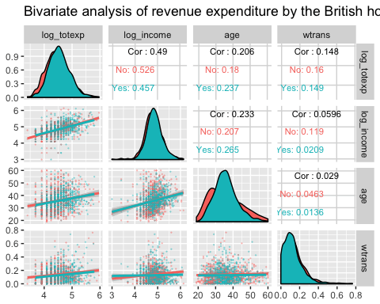
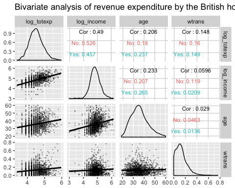

상관분석 : 피어슨 & 스피어만 (행렬 예제 포함)
이변량 관계(bivariate relationship)는 두 변수 사이의 관계 또는 상관관계를 설명한다. 이 튜토리얼에서는 상관관계(correlation)의 개념을 논의하고, 두 변수 사이의 관계를 측정하는 데에 어떻게 사용될 수 있는가를 살펴보겠다.
두 변수 사이의 상관관계를 계산하는 두 가지 기본 방법이 있다.
- 피어슨(Pearson) : 모수 상관관계
- 스피어만(Spearman) : 비모수 상관관계
이 튜토리얼에서는 다음에 대하여 학습한다.
피어슨 상관관계
피어슨 상관관계 방법은 보통 두 변수 사이의 관계를 일차적으로 검토하기 위해 사용된다.
상관 계수(coefficient of correlation)는 두 변수와의 선형 관계의 강도에 대한 척도로 다음과 같이 계산된다.

여기에서,
 : x 의 표준편차
: x 의 표준편차 : y의 표준편차
: y의 표준편차
상관계수의 범위는 ~1에서 1이다.
- 0에 가깝거나 0 값은 두 변수 사이에 선형 관계가 거의 또는 전혀 없음을 의미한다.
- 이와는 대조적으로 1 또는 -1에 가까울수록 강한 선형 관계가 있음을 의미한다.
다음과 같이 t-검증 값을 계산하여, 자유도를 갖는 분포표를 확인할 수 있다.

스피어만 순위 상관관계
순위 상관 관계는 관측치를 순위별로 정렬하고 그 순위 간의 유사성 수준을 계산한다. 순위 상관관계는 특이치(outliers)에 강하다는 장점이 있으며, 데이터의 분포와 연결되지 않는다는 점이다. 순위 상관 관계는 서열 변수(ordinal variable)에 적합하다는 점에 주의 하기 바란다. (두 변수 간의 스피어만 상관 계수는 두 변수의 순위 값 사이의 피어슨 상관 계수와 같다.)
스피어만의 순위 상관계수는 항상 -1과 1 사이에 있고, 양 극단에 다가갈수록 강한 관계를 나타낸다. 이 계수는 다음과 같이 계산된다.

여기에서, 분자는 순위 척도 rgx와 rgy 사이의 공분산을, 그리고 분모는 각 변수의 표준편차를 나타낸다.
R에서는 cor() 함수를 사용한다. 이 함수는 x,y 그리고 method 등의 3 가지 인수를 취한다.
xxxxxxxxxxcor(x, y, method)
Arguments:
x : 첫 벡터
y : 두번째 벡터
method : 상관관계를 계산하는데 사용되는 공식. 다음의 3가지 값에서 선택 :
- "pearson"
- "kendall"
- "spearman"
벡터가 결측치를 포함한다면 추가적인 인수로 use = "complete.obs"를 추가할 수 있다.
우리는 BudgetUK 데이터 세트를 사용할 것이다. 이 데이터 세트는 1980년과 1982년 사이 영국 가계의 예산 배분을 기록하고 있다. 10가지 특징(변수)을 가진 1,519개의 관측치가 있으며, 그 변수들은 다음과 같다.
- X : 데이터의 행 번호
- wfood : 식음료 지출
- wfuel : 연료 지출
- wcloth : 의류 지출
- walc : 주류 지출
- wtrans : 교통비 지출
- wother : 기타 상품 지출
- totexp : 주거비 지출(파운드화)
- income : 순 가계 소득
- age : 주부 나이
- children : 자녀 수
Example
xxxxxxxxxxlibrary(dplyr)PATH <-"https://raw.githubusercontent.com/guru99-edu/R-Programming/master/british_household.csv"data <-read.csv(PATH)data1 <- filter(data, income < 500) # delete rows with income >= 500Kdata2 <- mutate(data1, log_income = log(income), # converstion of monetary variableslog_totexp = log(totexp),children_fac= factor(children, order = TRUE, labels = c("No", "Yes")))data3 <- select(data2, -c(X, children, totexp, income)) # delete 3 columnsglimpse(data3)
코드 설명 :
- 먼저 데이터를 불러와서,
dplyr라이브러리의glimpse()함수로 살펴본다. (data) - 3개의 데이터가 500K 이상이기 때문에 제외하였다. (
data1) log()함수로 화폐단위 변수를 환산해주는 것은 일반적인 관행이다 (data2). 특이치(outlier)의 영향을 줄이고 데이터 세트의 왜도(skewness)를 줄이는 데 도움이 된다. (새 변수로log_income,log_totexp,children_fac등 3개가 생성됨.)- 원래 데이터 세트의
X,income,totextp,children열을 삭제한다.
결과 :
xxxxxxxxxx## Observations: 1,516## Variables: 10## $ wfood <dbl> 0.4272, 0.3739, 0.1941, 0.4438, 0.3331, 0.3752, 0...## $ wfuel <dbl> 0.1342, 0.1686, 0.4056, 0.1258, 0.0824, 0.0481, 0...## $ wcloth <dbl> 0.0000, 0.0091, 0.0012, 0.0539, 0.0399, 0.1170, 0...## $ walc <dbl> 0.0106, 0.0825, 0.0513, 0.0397, 0.1571, 0.0210, 0...## $ wtrans <dbl> 0.1458, 0.1215, 0.2063, 0.0652, 0.2403, 0.0955, 0...## $ wother <dbl> 0.2822, 0.2444, 0.1415, 0.2716, 0.1473, 0.3431, 0...## $ age <int> 25, 39, 47, 33, 31, 24, 46, 25, 30, 41, 48, 24, 2...## $ log_income <dbl> 4.867534, 5.010635, 5.438079, 4.605170, 4.605170,...## $ log_totexp <dbl> 3.912023, 4.499810, 5.192957, 4.382027, 4.499810,...## $ children_fac <ord> Yes, Yes, Yes, Yes, No, No, No, No, No, No, Yes, ...
이제 "피어슨"과 "스피어맨" 방법을 사용하여 income(소득)과 wfood(식음료) 변수수 사이의 상관 계수를 계산할 수 있다.
1) 피어슨 상관계수
xxxxxxxxxxcor(data$log_income, data$wfood, method = "pearson")
결과 :
xxxxxxxxxx## [1] -0.2466986
2) 스피어만 상관계수
xxxxxxxxxxcor(data$log_income, data$wfood, method = "spearman")결과 :
xxxxxxxxxx## [1] -0.2501252
상관계수 행렬
이변량 상관관계는 좋은 출발이지만 다변량 분석(multivariate analysis)을 통해 더 큰 그림을 얻을 수 있다. 많은 변수와의 상관관계는 상관계수 행렬(correlation matrix) 안에서 그려진다. 상관계수 행렬은 모든 변수의 쌍대 상관관계를 나타내는 행렬이다.
cor() 함수는 상관계수 행렬을 반환한다. 이변량 상관관계과의 유일한 차이점은 변수를 지정할 필요가 없다는 것이다. 기본적으로 R은 모든 변수 사이의 상관관계를 계산한다.
주의 : factor 변수에 대해서는 상관관계를 계산할 수 없다는 점이다. 우리는 cor() 안에 데이터 프레임을 전달하기 전에 범주형 특징을 제거해야 한다.
상관관계 행렬은 대칭이며, 이는 대각선 위의 값들이 대각선 아래의 값들과 동일함을 의미한다. 행렬의 절반 만 보여주는 것이 더 시각적이다.
children_fac은 factor 수준 변수이기 때문에 제외한다. cor() 함수는 범주형 변수에 대해 상관관계 분석을 수행하지 않는다.
xxxxxxxxxx# the last column of data is a factor level. We don't include it in the codemat_1 <-as.dist(round(cor(data3[,1:9]),2))mat_1
코드 설명 :
- cor(data3) : 상관계수 행렬을 표시한다
- round(data, 2) : 행렬의 값들을 소숫점 이하 2째 자리에서 반올림 한다.
- as.dist() : 행렬의 대각선 하단부만 보여준다
결과 :
xxxxxxxxxx## wfood wfuel wcloth walc wtrans wother age log_income## wfuel 0.11## wcloth -0.33 -0.25## walc -0.12 -0.13 -0.09## wtrans -0.34 -0.16 -0.19 -0.22## wother -0.35 -0.14 -0.22 -0.12 -0.29## age 0.02 -0.05 0.04 -0.14 0.03 0.02## log_income -0.25 -0.12 0.10 0.04 0.06 0.13 0.23## log_totexp -0.50 -0.36 0.34 0.12 0.15 0.15 0.21 0.49
유의수준
유의수준(significance level)은 우리가 피어슨이나 스피어만 방법을 사용할 때 어떤 상황에서는 유용하다. Hmisc 라이브러리의 rcorr() 함수는 우리에게 'p-값(p-value)'을 산출해 준다. 우리는 conda에서 라이브러리를 다운로드하고 코드를 복사하여 터미널에 붙여넣을 수 있다 :
xxxxxxxxxxconda install -c r r-hmisc # or 'install.packages("Hmisc")' in RStudion console
rcorr()는 데이터 프레임을 행렬로 저장해야 한다. p-값으로 상관계수 행렬을 계산하기 전에 데이터를 행렬로 변환할 수 있다.
xxxxxxxxxxlibrary("Hmisc")data_rcorr <- as.matrix(data3[, 1:9])mat_2 <- rcorr(data_rcorr)# mat_2 <- rcorr(as.matrix(data3)) returns the same output
mat_2 는 리스트 변수로 다음의 3개 요소를 포함한다 [str(mat_2)] :
- r : 상관계수 행렬의 출력
- n : 관찰 데이터 갯수
- P : 변수 간의 p-값 행렬
우리는 세 번째 요소인 p-값에 관심이 있다. 상관 계수 대신 p-값으로 상관 행렬을 표시하는 것이 일반적이다.
xxxxxxxxxxp_value <-round(mat_2[["P"]], 3)p_value
코드 설명 :
- mat_2[["P"]] : "P"라고 불리는 요소에 저장된 p-값
- round(mat_2[["P"]], 3) : 요소들을 셋째자리에서 반올림
결과 :
xxxxxxxxxxwfood wfuel wcloth walc wtrans wother age log_income log_totexpwfood NA 0.000 0.000 0.000 0.000 0.000 0.365 0.000 0wfuel 0.000 NA 0.000 0.000 0.000 0.000 0.076 0.000 0wcloth 0.000 0.000 NA 0.001 0.000 0.000 0.160 0.000 0walc 0.000 0.000 0.001 NA 0.000 0.000 0.000 0.105 0wtrans 0.000 0.000 0.000 0.000 NA 0.000 0.259 0.020 0wother 0.000 0.000 0.000 0.000 0.000 NA 0.355 0.000 0age 0.365 0.076 0.160 0.000 0.259 0.355 NA 0.000 0log_income 0.000 0.000 0.000 0.105 0.020 0.000 0.000 NA 0log_totexp 0.000 0.000 0.000 0.000 0.000 0.000 0.000 0.000 NA
상관계수 행렬 시각화
열 지도(heat map)는 상관관계 행렬을 보여주는 또 다른 방법이다. GGally 라이브러리는 ggplot2의 확장이다. 현재 conda 라이브러리에서는 이용할 수 없다. 우리는 콘솔에서 직접 설치할 수 있다.
xinstall.packages("GGally")
{kind=link}
라이브러리는 행렬에 있는 모든 변수의 상관관계 및 분포와 같은 요약 통계를 보여주는 다양한 함수를 포함한다.
ggcorr() 함수는 많은 인수를 가지고 있다. 이 튜토리얼에서는 주요 인수만 소개한다.
ggcorr() 함수
xxxxxxxxxxggcorr(df, method = c("pairwise", "pearson"),nbreaks = NULL, digits = 2, low = "#3B9AB2",mid = "#EEEEEE", high = "#F21A00",geom = "tile", label = FALSE,label_alpha = FALSE)
인수 :
- df : 사용되는 데이터 세트
- method : 상관관계 계산 공식. 기본 값, 쌍대 피어슨
- nbreaks : 계수의 색상을 위한 범주형 범위 반환. 기본 값으로 'no break'이고 색 그래디언트는 연속형.
- digits : 상관계수를 반올림. 기본 값으로 2자리.
- low : 색상의 가장 낮은 수준 제어
- mid: 색상의 중간 수준 제어
- high: 색상의 가장 높은 수준 제어
- geom: 기하학적 인수의 모양 제어. 기본 값은 'tile'
- label: 부울이안 값. 라베의 표시 여부. 기본 값은
FALSE
기본 열 지도
가장 기본적인 패키지의 플롯(plot)은 열 지도(heat map)이다. 그래프의 범례는 -1부터 1까지의 그래디언트 컬러(gradient color)로 나타내며, 뜨거운 색은 강한 양의 상관관계를 차가운 색은 음의 상관관계를 나타낸다.
xxxxxxxxxxlibrary(GGally)ggcorr(data3)
코드 설명 :
- ggcorr(data3) : 데이터 프레임인 단 하나의 인수만 필요하다. factor 수준 변수는 그림에 포함되지 않는다.
결과 :
{kind=link}
열 지도에 제어기 추가하기
우리는 그래프에 더 많은 제어기를 추가할 수 있다.
xxxxxxxxxxggcorr(data3,nbreaks = 6,low = "steelblue",mid = "white",high = "darkred",geom = "circle")
코드 설명 :
- nbreaks = 6 : 범례를 6 등급으로 구분
- low = "steelblue" : 음의 상관관계는 밝은 색깔을 이용
- mid = "white" : 중간 범위의 상관관계는 흰 색을 사용
- high = "darkred" : 양의 상관관계는 어두운 색 사용
- geom = "circle" : 열 지도에 유리창 모양을 원으로 표시. 원의 크기는 상관관계의 절대값에 비례한다.
결과 :
{kind=link}
열 지도에 데이터 값 표시하기
GGally는 창 안에 데이터 값을 표시할 수 있게 해준다.
xxxxxxxxxxggcorr(data3,nbreaks = 6,label = TRUE,label_size = 3,color = "grey50")
코드 설명 :
- label = TRUE : 열 지도 내에 상관계수 값을 추가
- color = "grey50" : 색의 선택. 예, grey50
- label_size = 3 : 숫자의 크기(3)
결과 :
{kind=link}
ggpairs
마지막으로, 우리는 GGaly 라이브러리의 Ggpair() 함수를 소개한다. 이 함수는 행렬 형식으로 그래프를 작성한다. 우리는 세 종류의 연산 결과를 하나의 그래프 안에 표시할 수 있다. 행렬은 관측치의 수와 같은 차원이다. 대각선 부분의 상/하부는 창을 표시한다. 우리는 행렬의 각 부분에서 어떤 정보를 보여줄지 제어할 수 있다. ggpair()의 형식은 다음과 같다 :
xxxxxxxxxxggpair(df, columns = 1: ncol(df), title = NULL,upper = list(continuous = "cor"),lower = list(continuous = "smooth"),mapping = NULL)
인수 :
- df : 사용되는 데이터 세트
- columns : 플롯을 작성할 열 선택
- title : 제목
- upper : 플롯의 대각선 위의 박스들을 제어. 연산의 종류 또는 반환한 그래프의 종류를 제시.
continuous = "cor"는 상관관계의 계산을 요청함. (주의 : 인수는 리스트 타입이다.) 다른 인수들도 사용될 수 있는데, 자세한 내용은 vignette를 참고하기 바란다. - Lower : 대각선 하단의 박스들을 제어
- Mapping : 그래프의 aesthetic을 지시한다. 예를 들어, 다른 그룹의 그래를 계산할 수 있다.
ggpair를 이용한 그룹별 이변량 분석
다음 그래프는 세 가지 정보를 나타낸다.
log_totexp,log_income,age및wtrans변수 간에 가정의 자녀 유무의 그룹별 상관관계 행렬- 각 변수의 그룹별 분포도
- 그룹별 추세를 보여주는 산점도 표시
xxxxxxxxxxlibrary(ggplot2)ggpairs(data3, columns = c("log_totexp", "log_income", "age", "wtrans"),title = "Bivariate analysis of revenue expenditure by the British household",upper = list(continuous = wrap("cor", size = 3)),lower = list(continuous = wrap("smooth",alpha = 0.3,size = 0.1)),mapping = aes(color = children_fac))
코드 설명 :
columns = c("log_totexp", "log_income", "age", "wtrans") : 그래프에 표시할 변수 선택
title = "Bivariate analysis of revenue expenditure by the British household" : 제목
upper = list() : 그래프의 상단부 즉 대각선 윗 부분을 제어
- continuous = wrap("cor", size = 3)) :
continuous인수는 wrap() 함수 안에 사용할 함수("cor" : 상관계수)와 그래프 글자의 크기(size = 3)를 표시한다.
- continuous = wrap("cor", size = 3)) :
lower = list() : 그래프의 하단 부, 즉 대각선 아래 부분을 제어
- continuous = wrap("smooth", alpha = 0.3, size=0.1) : 선형 경향을 갖는 산포도 추가.
wrap()함수 내부의 인수로 그래프트이 aes를 제어한다. (즉, size=0.1, alpha=0.3)
- continuous = wrap("smooth", alpha = 0.3, size=0.1) : 선형 경향을 갖는 산포도 추가.
mapping = aes(color = children_fac) : 우리는
children_fac변수(자녀가 없으면 '1', 있으면 '2'값을 가짐) 별로 그래프의 각 부분을 누적하고자 한다.
결과:**
[
ggpair를 이용한 부분 그룹별 이변량 분석
다음의 그래프는 약간 다르다. upper 인수 안쪽으로 mapping의 위치가 변경되었다.
xxxxxxxxxxggpairs(data3, columns = c("log_totexp", "log_income", "age", "wtrans"),title = "Bivariate analysis of revenue expenditure by the British household",upper = list(continuous = wrap("cor", size = 3),mapping = aes(color = children_fac)),lower = list(continuous = wrap("smooth",alpha = 0.3,size = 0.1)))
코드 설명 :
- 앞의 예와 다음의 사항을 제외하고는 똑 같다 :
mapping = aes(color = children_fac)부분이upper = list()의 인수 내부에 리스트로 들어감 그래프 상단 부에 그룹별(No, Yes)로 계산결과를 표시하고자 한다.
결과 :

요약
아래의 표에 함수들을 요약하였다.
| 라이브러리 | 목적 | 방법 | 코드 |
|---|---|---|---|
| Base | 이변량 상관관계 | 피어슨 | cor(dfx2, method = "pearson") |
| Base | 이변량 상관관계 | Spearman | cor(dfx2, method = "spearman") |
| Base | 다변량 상관관계 | 피어슨 | cor(df, method = "pearson") |
| Base | 다변량 상관관계 | Spearman | cor(df, method = "spearman") |
| Hmisc | P-값 | rcorr(as.matrix(data[,1:9]))[["P"]] | |
| Ggally | 열 지도 | ggcorr(df) | |
| 다변량 플롯 | cf code below |